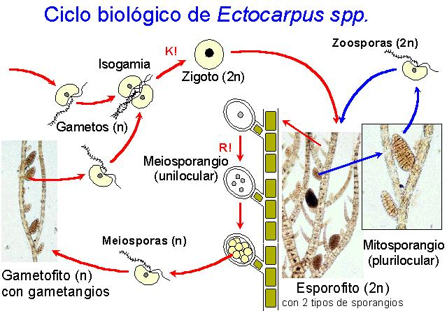
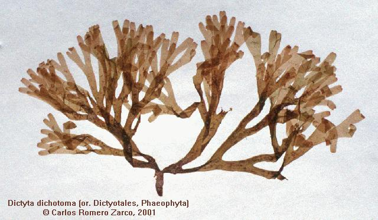
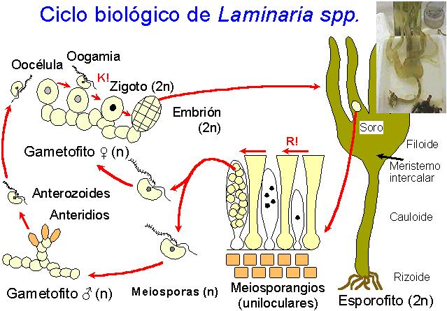
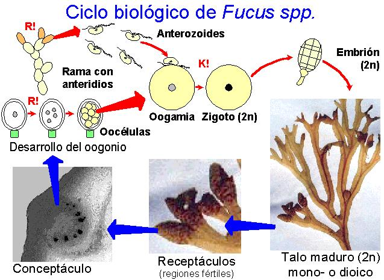
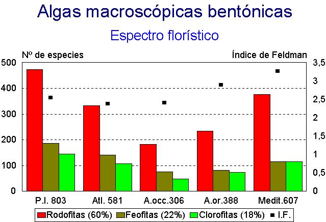
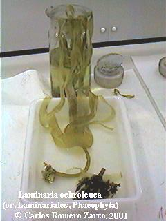

| Una sola clase de algas macroscópicas, las Feofíceas, conocidas vulgarmente como algas pardas, emparentadas con las Crisofitas |  |
| Una sola clase de algas macroscópicas, las Feofíceas, conocidas vulgarmente como algas pardas, emparentadas con las Crisofitas | |

Padina
pavonica
|
 |



|
 |